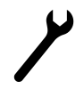
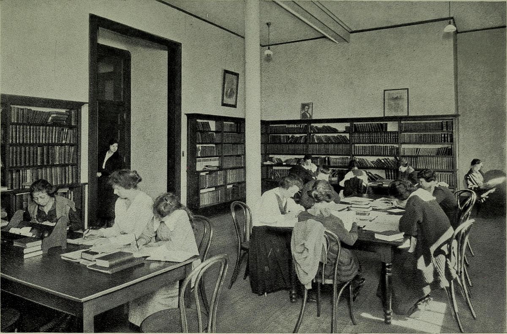

Carrying capacity
Motivation
This pattern can help project participants recognize and communicate their stresses to make themselves and the project more resilient.
Context
One of the important maxims from the world of FLOSS is: “Given enough eyeballs, all bugs are shallow” [8]. A partial converse is also true: there’s only so much any one person can do, since we all have limited time and energy.
Forces
Antifragility: each person’s potential can only be realized if people take on enough, but not too much.
 Independence: in a peeragogy context, it is often impossible to delegate work to others.
Problem
How can we help prevent those people who are involved with the project from over-promising or over-committing, and subsequently crashing and burning? First, let’s be clear that there are lots of ways things can go wrong. Simplistic expectations – like assuming that others will do the work for you [13] – can undermine your ability to correctly gauge your own strengths, weaknesses, and commitments. Without careful, critical engagement, you might not even notice when there’s a problem. Where one person has trouble letting go, others may have trouble speaking up. Pressure builds when communication isn’t going well.
Solution
Serious frustration is a sign that it’s time to revisit the group’s and your own individual plan. Are these realistic? If you have a “buddy” they can provide a reality check. Maybe things are not that hard after all – and maybe they don’t need to be done right now. Generalizing from this: the project can promote an open dialog by creating opportunities for people to share their worries and generate an emergent plan for addressing them [10]. Use the project to make note of obstacles. For example, if you’d like to pass a baton, you’ll need someone there who can take it. Maybe you can’t find that person right away, but you can bring up the concern and get it onto the project’s . The situation is always changing, but if we continue to create suitable checkpoints and benchmarks, then we can take steps to take care of an issue that’s getting bogged down.
Rationale
Think of the project as an ecosystem populated by acts of participation. As we get to know more about ourselves and each other, we know what sorts of things we can expect, and we are able to work together more sustainably [6]. We moderate stress and improve collective outcomes by taking concerns seriously.
Resolution
Guiding and rebalancing behavior in a social context can begin with speaking up about a concern. When we acknowledge concerns, we must take into account our own boundedness. We have find an opportunity to make ourselves helpful, without impinging on others’ independence. This doesn’t mean allowing all possible stresses to run rampant: we work to stay within the realm of antifragility, where manageable stress improves the system rather than degrading it [12]. As we share concerns and are met with care and practical support, our actions begin to align better with expectations (often as a result of forming more realistic expectations).
Example 1
Wikipedia aims to emphasize a neutral point of view, but its users are not neutral.1 topics that matter to them.2 and participation are not neutral in another less sanguine sense. More information on Wikipedia deals with Europe than all of the locations outside of Europe [2]. As we remarked in the pattern, most of the actual work is contributed by a small percentage of users. The technology limits the kinds of things that can be said [2]. The total number of active editors has been falling since 2007.3 Some blame outmoded technology and an insider culture [11], or a stringent editorial approach that emerged in response to the site’s popularity [3]. Others highlight the rise of successful competition, often inspired by wiki models, but driven by “corporate logic” [4,5]. Some proposed solutions focus on various indicators of “community health.”4
Example 2
Progressive thinkers have for some time subscribed to the view that “there shall be no women in case there be not men, nor men in case there be not women” [7]. A separate Ladies Hall seems entirely archaic. However, in light of the extreme gender imbalance in free software, and still striking imbalance at Wikipedia [1,9], it will be important to do whatever it takes to make women and girls welcome, not least because this is a significant factor in boosting our .

Ladies Hall: Queens College, North Carolina.
What’s Next in the Peeragogy Project
Making it easy and fruitful for others to get involved is one of the best ways to redistribute the load. This often requires knowledge transfer and skill development among those involved; see ….
- Can the tools we use talk with each other?
- 2 parallel Jitsi chats
- Paola: If you have to teach this class to undergrads, what would be the product?
Let’s think about this relative to the outcomes of the course:
“By the end of the course, students will be able to synthesize interventions relevant to global economic challenges. They will gain design and media production skills relevant to creating a Massive Open Online Course. It is expected that students will also train the affective dimensions of their engagement with difficult issues, by practicing rigorous self-assessment and developing constructive feedback for their peers. Specifically, students successfully completing the course will build a portfolio of evidence that they can receive major challenges with compassion, respond with an awareness of diverse needs, value others’ perspectives and voices, organize effective networks and strategies, and characterize constructive collaborative efforts and ways to support them.”
We can also define our own desired outcomes, and analyse what’s our carrying capacity to complete the course and the project. Discussing today w/ CO-OP uni people. How will we work with the students on our courses? Paola is teaching a research methodology course, thinking about different kinds of outcomes that are not like the classic research report, but that are a bit creative. So they are thinking about what they want to do. So, e.g., create something like an installation or a performance.
Charlotte: How about clipping a successful/unsuccessful outcome “moment” from a project? Identifying these moments and cataloging them sothey can be reproduced and re-used.
- Identifying moments that demonstrate successful patterns and practices
http://vieiro.github.io/xmark/
- Tufte: layout to pull things
- Sphinx: come up with their own creative learning outcome – but the chapter itself is a bit hard to follow
References
-
Rishab A. Ghosh, Ruediger Glott, Bernhard Krieger, and Gregorio Robles. 2002. Free/Libre and Open Source Software: Survey and Study. International Institute of Infonomics, University of Maastricht.
-
Mark Graham, Bernie Hogan, Ralph K Straumann, and Ahmed Medhat. 2014. Uneven geographies of user-generated information: Patterns of increasing informational poverty. Annals of the Association of American Geographers 104, 4: 746–764.
-
Aaron Halfaker, R. Stuart Geiger, Jonathan Morgan, and John Riedl. 2013. The Rise and Decline of an Open Collaboration System: How Wikipedia’s reaction to sudden popularity is causing its decline. American Behavioral Scientist 57, 5: 664–688. http://doi.org/10.1177/0002764212469365
-
Daniel Kreiss, Megan Finn, and Fred Turner. 2011. The limits of peer production: Some reminders from Max Weber for the network society. New Media & Society 13, 2: 243–259.
-
Mayo Fuster Morell. 2011. An introductory historical contextualization of online creation communities for the building of digital commons: The emergence of a free culture movement. Proceedings of the 6th Open Knowledge Conference. Retrieved from http://ceur-ws.org/Vol-739/paper_7.pdf
-
Elinor Ostrom. 2010. Revising theory in light of experimental findings. Journal of Economic Behavior & Organization 73, 1: 68–72.
-
François Rabelais. [1534] 1894. Gargantua and pantagruel. Moray Press.
-
Eric S Raymond. 2001. The Cathedral & the Bazaar: Musings on Linux and open source by an accidental revolutionary. O’Reilly Media, Inc.
-
Joseph Reagle. 2012. “Free as in sexist?” Free culture and the gender gap. First Monday 18, 1. Retrieved from http://firstmonday.org/ojs/index.php/fm/article/view/4291
-
Jaakko Seikkula and Tom Erik Arnkil. 2006. Dialogical meetings in social networks. Karnac Books.
-
Tom Simonite. 2013. The Decline of Wikipedia. Technology Review 116, 6: 50–56.
-
Nassim Nicholas Taleb. 2012. Antifragile: Things that gain from disorder. Random House Incorporated.
-
Linus Torvalds and Steven Vaughan-Nichols. 2011. Linus Torvalds’s Lessons on Software Development Management. Input Output. Retrieved from http://web.archive.org/web/20131021211847/http://h30565.www3.hp.com/t5/Feature-Articles/Linus-Torvalds-s-Lessons-on-Software-Development-Management/ba-p/440